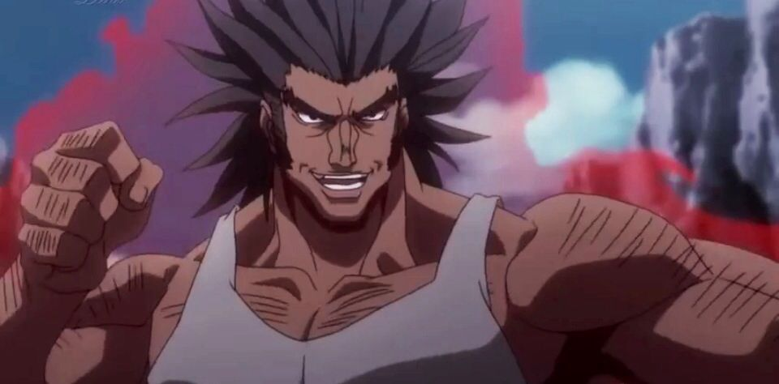

Uvogin
Uvogin, the brawny and boisterous member of the Phantom Troupe, is a powerhouse of raw strength and a master of Enhancer Nen. Known for his immense physical prowess and unshakable loyalty to the Spider, Uvogin’s abilities make him a fearsome opponent in close combat. His signature technique, Big Bang Impact, delivers a devastating punch capable of obliterating anything in its path. One of Uvogin’s most notable fights is against Kurapika, the Kurta clan survivor seeking vengeance against the Troupe for the massacre of his people. In their intense battle, Uvogin’s brute strength initially gives him the upper hand, but Kurapika’s strategic use of his Chain Jail ability, specifically designed to restrain and neutralize Troupe members, turns the tide. Despite Uvogin’s overwhelming power, he is ultimately outsmarted and captured by Kurapika, marking a significant moment in the series and highlighting the clash between raw strength and calculated vengeance.
